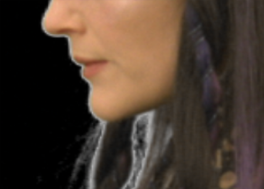

默认遮罩中的蓝屏像素。
选择头发颜色会忽略蓝色像素，产生更好的哑光。
虽然 ChromaKeyer 在选择屏幕颜色时会自动消除哑光，但您可能会发现可以通过使用 绝望的偏见 或者通过替换哑光边缘的颜色。
的 绝望的偏见 允许您从图像中指定颜色，与 阿尔法偏倚 ,以改善对哑光的整体绝望。通常，你应该选择肤色或头发颜色 绝望的偏见 .
| 1。 | 启用 定制绝望偏见 允许您使用 绝望的偏见 控制。 |
| 2. | 单击旁边的色样 绝望的偏见 激活滴管。 |
| 3. | Ctrl / Cmd + 转变 + 单击并在要替换查看器中突出显示的像素的颜色上拖动一个矩形区域。这将平均选定区域中的像素，以产生更好的结果。 |
|
|
|
|
默认遮罩中的蓝屏像素。 |
选择头发颜色会忽略蓝色像素，产生更好的哑光。 |
通过调整 alpha 通道来改善遮罩，可以从透明度发生变化的像素中去除错误数量的屏幕颜色。的 替换 控制指示 ChromaKeyer 如何处理这些像素。的 替换模式 控制哪些像素继承 替换颜色 .
| 1。 | 在 ChromaKeyer 属性 面板中，使用下拉菜单选择所需的替换模式: |
• 忽略 -如果 alpha 被修改，鄙视图像将保持不变。这是默认操作。
• 边缘硬颜色 -被鄙视的图像有相应数量的 替换颜色 增加阿尔法的任何增加。
• 边缘线性颜色 -令人沮丧的图像有分级的数量 替换颜色 ,由线性曲线控制，为 alpha 的任何增加而添加。靠近背景的像素有更多的背景偏差，靠近前景的像素有更多的前景偏差。
• 边缘柔和的颜色 -被鄙视的图像有相应数量的 替换颜色 然而，对于 alpha 的任何增加，它会尝试调节结果像素的亮度，使其与原始像素相匹配。这给出了一个比 边缘硬颜色 选项。
| 2. | 单击旁边的色样 替换颜色 激活滴管。 |
| 3. | Ctrl / Cmd + 转变 + 单击并在要替换查看器中突出显示的像素的颜色上拖动一个矩形区域。这将平均选定区域中的像素，以产生更好的结果。 |
注意: 你可以通过启用来增强绝望效果 外接程序磨砂修复 也可以将替换颜色应用于被腐蚀或扩张的区域 白点 和 黑点 控制。
|
 |
|
|
图像与 边缘柔和的颜色 突出显示。 |
突出显示的像素被从查看器中选择的颜色替换。 |
| 4. | 使用 替换金额 滑块来控制有多少 替换颜色 应用。 |
| 5. | 禁用 预乘 如果不希望输出被 alpha 通道预乘，请控制。 |
|
|